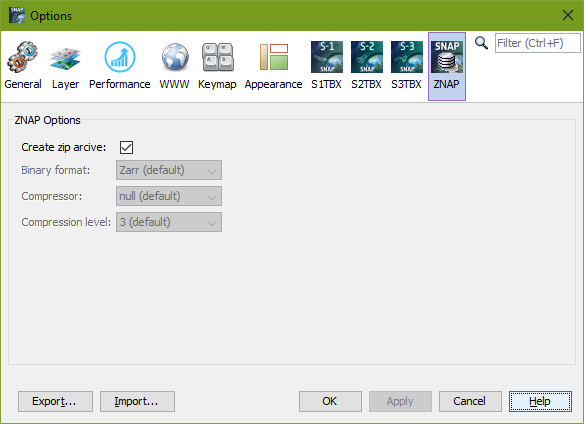

| Export ZNAP | |
⚠ ⚠ ⚠ Your attention, please! ⚠ ⚠ ⚠This writer is available as beta version.In the near future, this writer will become the default writer for the SNAP application to replace BEAM-DIMAP. Using this format for production purposes is not yet recommended, as parts of the format may still change. However, it would be very helpful if you use this format for testing purposes to give us feedback. To send us feedback, please use the |
||
With this writer you can export the data of the current product into the ZNAP format of SNAP.
Zarr in general is a Python package providing an implementation of compressed, chunked, N-dimensional arrays, designed for use in parallel computing.
Source reference and for detailed information, please refer to the documentation of the
Zarr's official website describes Zarr as a Python package that provides an implementation of chunked, compressed,
N-dimensional arrays.
Chunked indicates that Zarr can handle very large datasets and fast data access.
Compressed means that Zarr can save files using reasonable storge size which also means with less cost.
N-dimensional arrays reveals that Zarr can handle multi-dimension datasets just like Netcdf (e.g. geoscience
datasets with time, x, y, and z four-dimensional datasets).
Some highlights as follow:
The most critical component of Zarr is that it can let you read and write files to cloud storage system (e.g. AWS S3) just like your local file system with the same convience of Netcdf format.
Reference:
ZNAP uses the JZarr library. It is a Java implementation for the Zarr format and is still under development.
All data written with JZarr can be read with Python Zarr. Conversely, not everything written with Python
Zarr can currently be read by JZarr. One of the reasons for this is that not all compression algorithms
supported by Zarr are yet implemented in JZarr.
The format consists mainly of Zarr groups and subgroups and Zarr arrays contained therein as well as additional metadata, which is mainly in JSON format.
A Zarr group or subgroup consists of a folder and a file called ".zgroup", which defines the folder as a group.
Optionally, each group or subgroup can contain one ".zattrs" (JSON metadata) file.
Also optionally, there can be any number of zarr arrays in each group.
A Zarr array consists of a folder, a ".zarray" file that defines the array (size, chunk size, data type, etc.), an optional ".zattrs" file for metadata, and finally of course the array data itself.
The array data can be written as Zarr chunk files, or in one of SNAP's internal formats:
Another subgroup is called "SNAP". It contains further metadata and vector data.
Via the Options dialogue in SNAP UI or corresponding VM parameters, if SNAP is used on the command line (e.g. Graph Processing Tool), it can be decided whether the product is written as a zip archive or as a folder structure.

If Zip-Archive is selected the array data can only be written as Zarr chunks.
Zip-Archive is default and in most cases the fastest way to write and read products.
If Zip-Archive is deselected, the binary format for the array data can be chosen from the following:
If "Zarr" is selected as binary format, you can choose between "null (default)" Compressor or "zlib" Compressor.
The "null" compressor is only a proxy, which writes the data of a chunk natively to the disk without
overhead but also without compression.
If "zlib" compressor is selected, compression level 0 - 9 can be chosen.
Compression level 3 is default.
Higher compression levels rarely result in even higher compression rates. However, this is of course dependent
on the type of data to be written and can therefore be selected by the user.
A product exported in this way is fully compatible with the Python Zarr library and can be processed directly if none of the SNAP internal formats is used as the binary format for the array data. So neither ENVI nor one of the other formats but Zarr (default).
The exported product consists of a zarr group at the highest level. This product root group contains meta information that refers to the product such as product name, product description, product type, sensing start/end, geocoding, ...

General information about how a group is saved can be found here.
Raster data (e.g. bands and tie point grids) are written as chunked, compressed, N-dimensional zarr arrays within the root group. To achieve the highest possible speed when writing data, the chunk size is aligned to the tile size of the data.
Besides the chunked binary data, the data type, compression type, shape, chunk size, etc. are written to a
.zarray file.

The meaning of the zarr specific values in the .zarray file is explained in detail in
the documentation of the
Such zarr arrays also contain metadata that refers to the raster such as e.g. long_name,
wavelength and unit, valid_pixel_expression, flag mask meaning and description or offsets, etc
See examples below.
General information about how an array is stored can be found
A persitstable layer is currently being prepared, which will allow developers to integrate their own implementations of the data model, e.g. special implementations of geocoding, in this format without having to know the format's internal structure.
The following examples show snippets of .zattrs files.
Metadata example for an optical raster:

Metadata example for flag raster data:

Metadata example for tie point raster data: